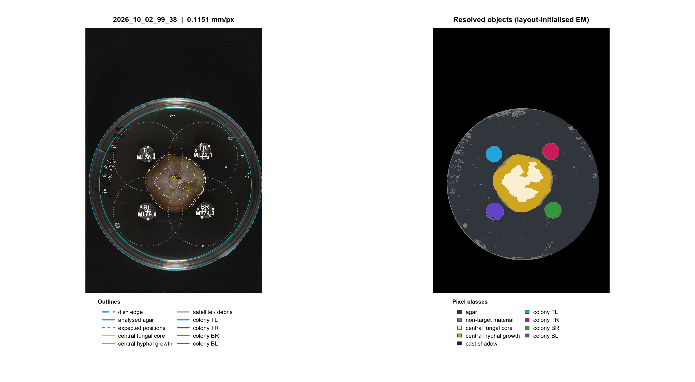
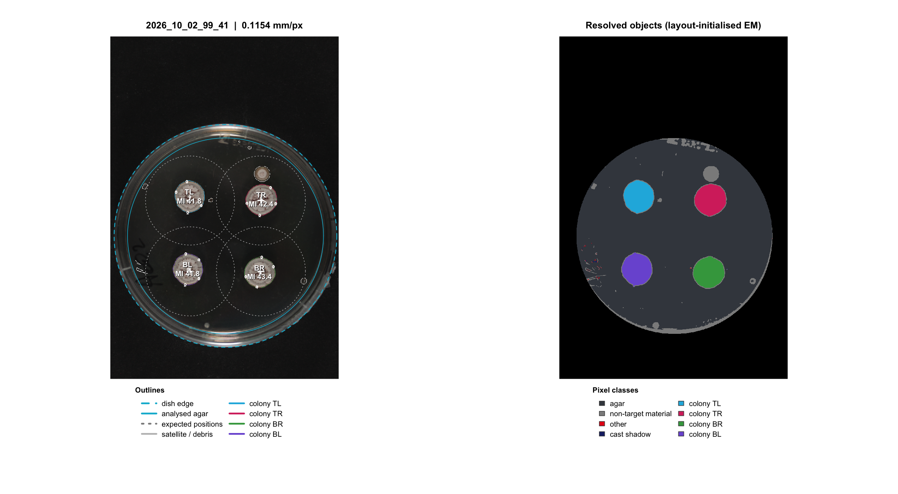
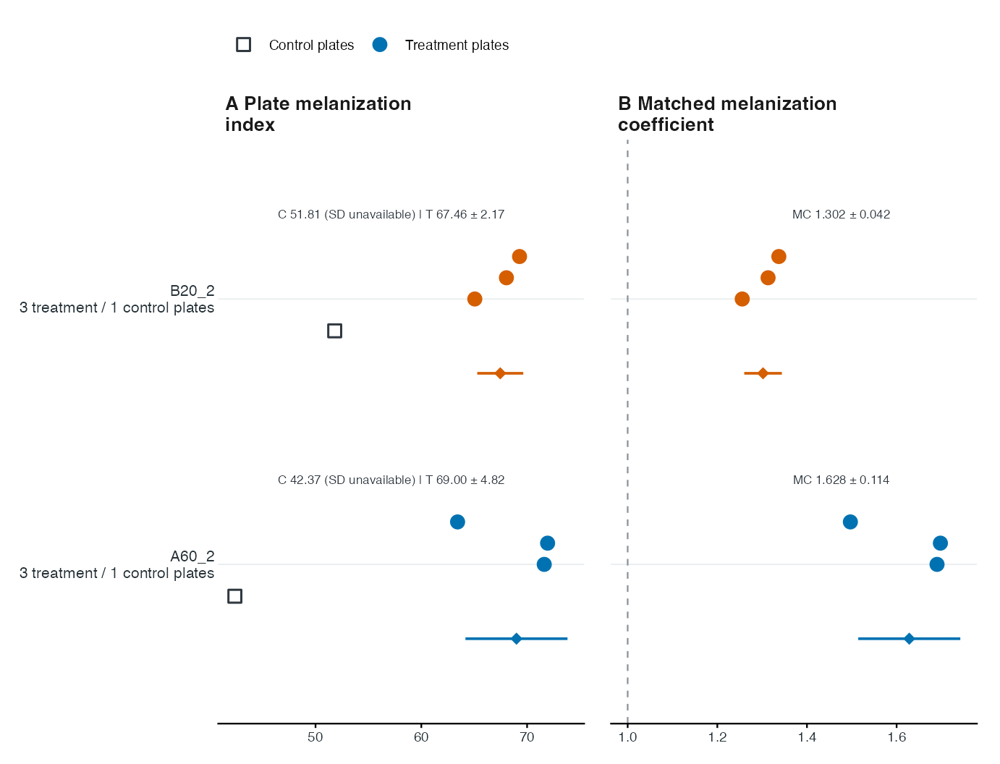

REAL DATA · EIGHT ORIGINAL PHOTOGRAPHS · TWO MATCHING SETS
From the original photograph to a traceable comparison.
A complete practice run with supplied metadata, five spots per target colony, image QC, matched coefficients, saved tables and publication-format exports.
Start here after installing FunMel. Run numbered steps in order; all objects used below are created in this article. The figures and tables shown here use the bundled photographs. The function catalog covers specialist tools separately.
What this experiment contains
Each matching set has one independent control plate and three independent confrontation plates. Each plate has four target Zymoseptoria tritici colonies. Confrontation plates also contain a central fungus and connected hyphal growth; control plates do not. The central growth is not an inhibition zone.
| Matching set | Independent plate image | Role | Replicate |
|---|---|---|---|
| A60_2_14_days | 2026_10_02_99_38.JPG | A60_2 confrontation | 1 |
| A60_2_14_days | 2026_10_02_99_39.JPG | A60_2 confrontation | 2 |
| A60_2_14_days | 2026_10_02_99_40.JPG | A60_2 confrontation | 3 |
| A60_2_14_days | 2026_10_02_99_41.JPG | Own-set control | 1 |
| B20_2_14_days | 2026_10_02_99_42.JPG | B20_2 confrontation | 1 |
| B20_2_14_days | 2026_10_02_99_43.JPG | B20_2 confrontation | 2 |
| B20_2_14_days | 2026_10_02_99_44.JPG | B20_2 confrontation | 3 |
| B20_2_14_days | 2026_10_02_99_45.JPG | Own-set control | 1 |
The folder-derived labels are teaching labels whose biological
identities and assignments must be checked against laboratory records.
The supplied source field fungus="hm83" is retained without
assigning an unverified biological role. Unrecorded strain/medium fields
remain blank. The eight original JPEGs are unchanged. No separate image
download is required.
1. Locate the photographs and create one practice project
library(FunMel)
photos14 <- system.file("extdata","14-days",package="FunMel")
stopifnot(nzchar(photos14))
project_dir14 <- tempfile("FunMel_14_day_project_")
project14 <- prepare_experiment(photos14,project_dir14)tempfile() supplies a new temporary folder
name, so this teaching run does not overwrite earlier work. Its
files last only as long as the temporary location remains. For a project
you want to keep, replace that assignment before
starting with a new durable folder, for example:
# Alternative to tempfile() above; use a new folder once.
project_dir14 <- file.path(path.expand("~"),"FunMel_14_day_project")
project14 <- prepare_experiment(photos14,project_dir14)Do not run both preparation alternatives for the same project. To revisit work already saved, go directly to step 8. A folder or ZIP is passed directly here; there is no file chooser and no opportunity to select a QC image accidentally.
project14$project_dir # All output files.
project14$metadata_file # Project copy of the experimental design.
project14$qc_dir # QC PNGs created by the image run.2. Check the supplied metadata
The combined metadata is discovered automatically. Inspect it before measuring:
metadata14 <- read.csv(project14$metadata_file,check.names=FALSE)
knitr::kable(tutorial_table14(metadata14,
c("plate_id","set_id","treatment","centre_model","replicate"),
required=c("plate_id","set_id","treatment","centre_model"),label="metadata"),row.names=FALSE)| plate_id | set_id | treatment | centre_model | replicate |
|---|---|---|---|---|
| 2026_10_02_99_38 | A60_2_14_days | A60_2 | fungus | 1 |
| 2026_10_02_99_39 | A60_2_14_days | A60_2 | fungus | 2 |
| 2026_10_02_99_40 | A60_2_14_days | A60_2 | fungus | 3 |
| 2026_10_02_99_41 | A60_2_14_days | control | none | 1 |
| 2026_10_02_99_42 | B20_2_14_days | B20_2 | fungus | 1 |
| 2026_10_02_99_43 | B20_2_14_days | B20_2 | fungus | 2 |
| 2026_10_02_99_44 | B20_2_14_days | B20_2 | fungus | 3 |
| 2026_10_02_99_45 | B20_2_14_days | control | none | 1 |
validate_metadata(metadata14)Each control appears once, labelled treatment="control"
and centre_model="none". Each confrontation uses
centre_model="fungus". All four plates in a matching group
share their set_id. A60_2 never uses B20_2’s control or
vice versa. replicate is numbered within a treatment and
set; it does not by itself pair a treatment plate with a uniquely
replicated control. With one control in a set, its mean is the shared
denominator for the three treatment plates.
Verify treatment identities, controls, sets, day and any recorded strain/medium. Correct missing or inaccurate information. Additional user-defined columns are preserved. Do not infer biological identities from a filename alone. If corrections are needed, edit the project CSV and save it before the next step. Do not change image identity or layout after analysis without remeasuring.
3. Set calibration and measure all eight plates
In this example, 90 is an illustrative outer
dish diameter, not a verified physical measurement of these
photographs. Replace it with the actual outer diameter for scientific
use. Do not paste subsequent R commands into a readline()
prompt; this workflow sets the number directly.
dish_mm <- 90
result14 <- run_experiment(
project14,dish_diameter_mm=dish_mm,max_dim=1200,
n_spots=5,spot_radius_mm=0.4,n_boot=20
)
result14$analysis_status
#> [1] "complete"
result14$failed
#> [1] file error
#> <0 rows> (or 0-length row.names)
stopifnot(nrow(result14$failed)==0L)The expected status is "complete"; the failure table has
zero rows. This saves image_analysis.rds, measurement CSVs
and a QC PNG for each plate. A genuine failed image must be corrected
before finalization. Success does not certify segmentation or biological
accuracy.
| Setting | Meaning in this tutorial |
|---|---|
dish_diameter_mm |
Outer diameter used to convert pixels to millimetres |
max_dim=1200 |
Longest working-image dimension; influences spatial resolution |
n_spots=5 |
Request five additional circular regions within each target colony |
spot_radius_mm=0.4 |
Radius of each spot, not its diameter |
n_boot=20 |
Quick teaching setting for spatial-block bootstrap summaries, not precise uncertainty |
Whole-colony MI uses eligible interior pixels, excluding the rim and saturated/specular pixels. Spots add a deterministic, spatially spread sample; they do not replace whole-colony measurements. Omit spot settings for whole-colony measurements alone. Use consistent settings across comparable plates.
data.frame(plates=nrow(result14$plates),colonies=nrow(result14$colonies),
spots=nrow(result14$spots),failed=nrow(result14$failed))
#> plates colonies spots failed
#> 1 8 32 160 04. Inspect masks, spots and illumination
Inspect all eight QC images in project14$qc_dir. The
examples below show one confrontation and its own control; they do not
replace reviewing the remaining photographs.

Example QC: a confrontation plate and its own matching control. Inspect the target outlines, spot locations, central fungal tissue/hyphae and dish calibration on every image.

Example QC: a confrontation plate and its own matching control. Inspect the target outlines, spot locations, central fungal tissue/hyphae and dish calibration on every image.
Check target-colony boundaries, central tissue/hyphal separation, spot containment, dish edge, shadows, glare and warning text. The approximately round targets need not have perfectly circular outlines. Correct unsuitable images or measurements before interpreting the final comparisons.
qc_table14 <- tutorial_table14(result14$plates,
c("plate_id","n_colonies_detected","central_detected","flat_field_status"),
required="plate_id",label="plate QC table")
report_missing14(qc_table14,"plate QC")
print(knitr::kable(qc_table14,row.names=FALSE))| plate_id | n_colonies_detected | central_detected | flat_field_status |
|---|---|---|---|
| 2026_10_02_99_38 | 4 | TRUE | withheld_degenerate_fit |
| 2026_10_02_99_39 | 4 | TRUE | withheld_degenerate_fit |
| 2026_10_02_99_40 | 4 | TRUE | withheld_degenerate_fit |
| 2026_10_02_99_41 | 4 | FALSE | withheld_degenerate_fit |
| 2026_10_02_99_42 | 4 | TRUE | withheld_degenerate_fit |
| 2026_10_02_99_43 | 4 | TRUE | withheld_degenerate_fit |
| 2026_10_02_99_44 | 4 | TRUE | withheld_degenerate_fit |
| 2026_10_02_99_45 | 4 | FALSE | withheld_degenerate_fit |
Read the status recorded in your table.
withheld_degenerate_fit means the fitted illumination
correction did not pass the saturation safeguard and was withheld.
NA or an absent field means not reported,
not that correction was applied or passed. The table explicitly
identifies fields not supplied by the analysis. Inspect the QC images
and repeat measurement if QC information is missing. A withheld
correction is not evidence of adequate illumination.
Treatment/control ratios do not guarantee cancellation of exposure or
lighting differences. Use consistent imaging and a suitable reference;
rephotograph when needed. The figures here illustrate software output,
not a validated melanin-concentration assay.
Console reminders identify image-QC checks. Inspect the QC images before interpreting or reporting results.
5. Inspect whole-colony, spot and profile tables
colony_table14 <- tutorial_table14(result14$colonies,
c("plate_id","colony_id","MI_min","MI_mean","MI_max","MI_spot_mean","n_spots_measured","spot_status"),
required=c("plate_id","colony_id","MI_mean"),label="colony measurements")
report_missing14(colony_table14,"colony table")
knitr::kable(head(colony_table14),digits=2,row.names=FALSE)| plate_id | colony_id | MI_min | MI_mean | MI_max | MI_spot_mean | n_spots_measured | spot_status |
|---|---|---|---|---|---|---|---|
| 2026_10_02_99_38 | TL | 42.26 | 70.45 | 90.67 | 72.00 | 5 | ok |
| 2026_10_02_99_38 | TR | 41.95 | 72.11 | 95.23 | 71.60 | 5 | ok |
| 2026_10_02_99_38 | BR | 53.71 | 74.29 | 94.55 | 71.19 | 5 | ok |
| 2026_10_02_99_38 | BL | 43.64 | 69.64 | 88.77 | 61.21 | 5 | ok |
| 2026_10_02_99_39 | TL | 40.52 | 71.19 | 93.22 | 71.04 | 5 | ok |
| 2026_10_02_99_39 | TR | 34.74 | 68.28 | 93.39 | 64.63 | 5 | ok |
MI = 100 - CIELAB L*; larger values indicate darker
tissue. MI_min and MI_max are observed
whole-colony pixel extrema, not confidence limits.
MI_spot_mean is the mean of the individual spot means. The
corresponding MI_spot_min/max are extrema of spot
means, not pixel extrema.
spot_table14 <- tutorial_table14(result14$spots,
c("plate_id","colony_id","spot_id","spot_radius_mm","n_pixels","MI_mean","MI_min","MI_max"),
required=c("plate_id","colony_id","spot_id","MI_mean"),label="spot measurements")
report_missing14(spot_table14,"spot table")
knitr::kable(head(spot_table14),digits=2,row.names=FALSE)| plate_id | colony_id | spot_id | spot_radius_mm | n_pixels | MI_mean | MI_min | MI_max |
|---|---|---|---|---|---|---|---|
| 2026_10_02_99_38 | TL | 1 | 0.4 | 37 | 71.71 | 63.31 | 85.44 |
| 2026_10_02_99_38 | TL | 2 | 0.4 | 37 | 74.01 | 65.28 | 87.13 |
| 2026_10_02_99_38 | TL | 3 | 0.4 | 37 | 69.63 | 55.06 | 80.29 |
| 2026_10_02_99_38 | TL | 4 | 0.4 | 37 | 68.49 | 59.81 | 78.25 |
| 2026_10_02_99_38 | TL | 5 | 0.4 | 37 | 76.13 | 66.56 | 84.13 |
| 2026_10_02_99_38 | TR | 1 | 0.4 | 37 | 71.61 | 63.28 | 81.61 |
Each spot has a location in working-image pixels (x_px,
y_px), a physical radius and an achieved pixel count.
L_mean is mean CIELAB lightness; spot MI_mean
is 100-L_mean. Pixel counts depend on the scale and working
resolution. Check spot_status and
n_spots_measured; if all requested spots cannot fit without
overlap, the incomplete summary is unavailable instead of invented.
profile_table14 <- tutorial_table14(result14$profiles,
c("plate_id","colony_id","mid_mm","MI_mean","MI_lo","MI_hi"),
required=c("plate_id","colony_id","MI_mean"),label="profiles")
report_missing14(profile_table14,"profiles")
knitr::kable(head(profile_table14),digits=2,row.names=FALSE)| plate_id | colony_id | mid_mm | MI_mean | MI_lo | MI_hi |
|---|---|---|---|---|---|
| 2026_10_02_99_38 | TL | 0.25 | 71.19 | 70.28 | 71.88 |
| 2026_10_02_99_38 | TL | 0.75 | 72.96 | 71.71 | 73.82 |
| 2026_10_02_99_38 | TL | 1.25 | 68.91 | 67.48 | 70.57 |
| 2026_10_02_99_38 | TL | 1.75 | 68.08 | 66.74 | 69.64 |
| 2026_10_02_99_38 | TL | 2.25 | 68.01 | 66.21 | 69.70 |
| 2026_10_02_99_38 | TL | 2.75 | 69.58 | 66.31 | 71.97 |
Profiles describe darkness from the colony edge inward. Their spatial bootstrap bounds quantify an image-level sampling procedure, not biological replication or chemical melanin uncertainty. The low bootstrap count here is for speed.
The full metadata is in result14$metadata; custom column
names and values are retained. Colliding measurement names receive a
metadata_ prefix only in measurement tables. Do not use
project14$result_file$spots: result_file is a
filename, whereas result14$spots is a
data frame.
6. Finalize and verify the own-control arithmetic
reviewed14 <- FunMel::finish_experiment(project14)
coefficient_table14 <- tutorial_table14(reviewed14$melanization_coefficient,
c("set_id","treatment","MI_treatment_mean","MI_control_mean","melanization_coefficient",
"n_treatment_plates","n_control_plates"),
required=c("set_id","treatment","MI_treatment_mean","MI_control_mean","melanization_coefficient"),
label="matched coefficients")
report_missing14(coefficient_table14,"coefficient table")
print(knitr::kable(coefficient_table14,digits=3,row.names=FALSE))| set_id | treatment | MI_treatment_mean | MI_control_mean | melanization_coefficient | n_treatment_plates | n_control_plates |
|---|---|---|---|---|---|---|
| A60_2_14_days | A60_2 | 68.996 | 42.374 | 1.628 | 3 | 1 |
| B20_2_14_days | B20_2 | 67.463 | 51.813 | 1.302 | 3 | 1 |
reviewed14$assessment$status[1] “insufficient_plate_replication”
A plate’s MI is the equally weighted mean of its target-colony
MI_mean values. Within each set, the coefficient is:
For this teaching calibration, A60_2 is approximately 1.628 and B20_2 approximately 1.302. Verify the saved arithmetic without pooling controls:
cf14 <- reviewed14$melanization_coefficient
stopifnot(isTRUE(all.equal(cf14$melanization_coefficient,
cf14$MI_treatment_mean/cf14$MI_control_mean)))
knitr::kable(reviewed14$per_plate_coefficients,digits=3,row.names=FALSE)| plate_id | treatment | set_id | MI_treatment_plate | MI_matching_control | melanization_coefficient | n_control_plates | qc_review_status | status |
|---|---|---|---|---|---|---|---|---|
| 2026_10_02_99_38 | A60_2 | A60_2_14_days | 71.621 | 42.374 | 1.690 | 1 | unconfirmed | ok |
| 2026_10_02_99_39 | A60_2 | A60_2_14_days | 71.938 | 42.374 | 1.698 | 1 | unconfirmed | ok |
| 2026_10_02_99_40 | A60_2 | A60_2_14_days | 63.428 | 42.374 | 1.497 | 1 | unconfirmed | ok |
| 2026_10_02_99_42 | B20_2 | B20_2_14_days | 65.057 | 51.813 | 1.256 | 1 | unconfirmed | ok |
| 2026_10_02_99_43 | B20_2 | B20_2_14_days | 68.045 | 51.813 | 1.313 | 1 | unconfirmed | ok |
| 2026_10_02_99_44 | B20_2 | B20_2_14_days | 69.287 | 51.813 | 1.337 | 1 | unconfirmed | ok |
The status "insufficient_plate_replication" is expected.
There is one control per set, so significance tests are withheld, while
valid descriptive ratios remain available. Four colonies and five spots
per colony do not add independent control plates. These two treatments
also occur in different sets, so a direct causal treatment ranking may
be confounded with batch. A darker image-based mean is not a
demonstrated fold change in melanin concentration.
For a prespecified spot-mean descriptive response:
spot_coefficient14 <- melanization_coefficient(reviewed14,response="MI_spot_mean")This changes the response definition; it does not create independent spot replicates. The default figure and assessment use whole-colony MI.
7. Display, export and explain the final figure
print(plot_treatment_comparison(reviewed14))
Descriptive real-data comparison. Each row uses that treatment’s own set control; these are image-darkness ratios under the illustrative calibration.
You can also plot the finalized object already in memory:
print(plot_treatment_comparison(reviewed14))- Left panel: independent plate MI means. Squares are controls; coloured circles are treatment plates; lower diamonds are treatment means.
- Right panel: each treatment plate divided by its own set’s control mean, and the set-level ratio of means. The dashed reference line is MC = 1.
- Bars and printed ± values: one between-plate SD, not confidence intervals. Control SD is unavailable for a single control. Ratio SD conditions on the shared control mean and does not include its uncertainty.
- QC reminders: remain visible in the console and separate caption file; they identify checks to complete before reporting results.
Finalization already exported treatment_comparison.pdf,
.svg, .png and _statistics.csv
into the project folder. To create a named alternative:
plot_treatment_comparison(reviewed14,
file=file.path(project14$project_dir,"my_14_day_comparison"),
labels=c(A60_2="Fungal treatment A60_2",B20_2="Fungal treatment B20_2"))PDF and SVG retain vector text and geometry; PNG is 600 dpi. Check the target journal’s final dimensions, font sizes and caption requirements. Changing display labels does not change metadata or statistical matching.
8. Close R, reopen the project and read saved tables
For a project saved in a durable folder, start a fresh session and
select its image_analysis.rds file. Read saved results
directly from that same folder:
library(FunMel)
saved_file14 <- file.choose() # Select image_analysis.rds in the project folder.
saved_dir14 <- dirname(normalizePath(saved_file14,mustWork=TRUE))
result14 <- readRDS(file.path(saved_dir14,"image_analysis.rds"))
reviewed14 <- readRDS(file.path(saved_dir14,"reviewed_analysis.rds"))
head(result14$spots)
print(plot_treatment_comparison(reviewed14))This reads existing measurements; it does not repeat image analysis. Keep the complete project folder so the original and finalized results remain together.
For project-aware recovery, the optional
load_experiment() and read_experiment()
helpers reconnect moved project paths:
project14 <- load_experiment() # Select project.rds in its current folder.
result14 <- read_experiment(project14)
reviewed14 <- read_experiment(project14,finalized=TRUE)After opening the project with load_experiment(), update
final outputs after correcting valid experimental annotations:
reviewed14 <- FunMel::finish_experiment(project14)Final outputs saved means this succeeded. It is
unnecessary to prepare the photographs again. Keep the complete folder,
including project.rds, metadata CSV and saved results.
load_experiment() reconnects moved internal paths. Saved
measurements can be read/finalized without the original photographs, but
a new image run still needs them. Missing metadata cannot be safely
guessed or rebuilt from image appearance. Changes affecting masks
require reanalysis.
9. Optional close-up measurements and specialist tools
Batch results keep tables and saved QC PNGs but drop large image arrays. For interactive image-level views, reprocess just one real photograph with images retained:
row14 <- metadata14[metadata14$plate_id=="2026_10_02_99_38",,drop=FALSE]
plate14 <- analyze_plate(file.path(project14$image_root,row14$relative_file),
id=row14$plate_id,layout=layout_by_treatment(row14),dish_diameter_mm=dish_mm,
max_dim=1200,n_spots=5,spot_radius_mm=0.4,n_boot=20,keep_images=TRUE)
plot_qc(plate14)
print(plot_profiles(plate14))
plot_melanization_map(plate14,type="2d")The darkness map is not pigment concentration. For a different spot
count/radius,
sample_colony_spots(plate14,n_spots=3,spot_radius_mm=0.4)
demonstrates the sampling API; do not change compared responses
inconsistently. Calibration, classifier training and interactive
annotation examples are in the complete
function catalog. A classifier trained on synthetic teaching labels
is not validated for these photographs.
Find the exported files
| File | Contents |
|---|---|
| project.rds | Saved project paths for project-aware recovery |
| plate_metadata.csv | Editable experimental assignments, one row per plate |
| image_analysis.rds | Original measured tables and analysis status |
| colonies.csv, spots.csv, profiles.csv, plates.csv | Measurement tables |
| failed.csv | Failed-image reports; zero rows on a successful run |
| metadata_used.csv | Full metadata attached to the outputs |
| reviewed_analysis.rds | Finalized result; the name does not certify review |
| assessment.rds | Statistical/descriptive assessment and its status |
| melanization_coefficient.csv | Own-set ratios of treatment/control means |
| per_plate_coefficients.csv | Treatment plate ratios using own-set control means |
| coefficient_plate_means.csv | Independent plate means used in calculations |
| treatment_comparison.pdf/.svg/.png | Comparison exports |
| treatment_comparison_statistics.csv | Exact descriptive values plotted |
| treatment_comparison_caption.txt | Full interpretation, SD definitions, limitations and QC status |
| qc_review_status.csv | Recorded QC status |
| qc/ | One QC PNG per image |
| sessionInfo.txt | R, platform and package versions |
Different recorded day/strain/medium contexts create separate final
output folders and context_index.csv; do not pool
incompatible contexts. To adapt this tutorial to other photographs,
replace the input folder/ZIP and verified metadata, retaining the
own-control design. Do not reuse these eight-file labels for another
experiment.
The installed script examples/walkthrough_14_days.R
follows the same numbered procedure. Precomputed tables in
extdata/14_day_example are documented in their
PROVENANCE.md. The steps above analyze the original
photographs.
Comparison captions are exported separately as
treatment_comparison_caption.txt. Use
caption="brief" or caption="full" in
plot_treatment_comparison() to include a caption beneath
the figure.